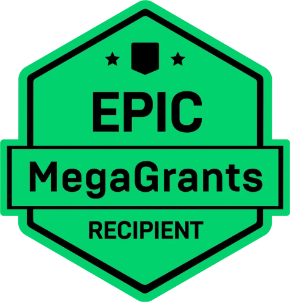

Epic MegaGrant Recipient
Epic Games’ support is helping us accelerate development of AeonFall.
What We’re Making
AeonFall – Hardcore Roguelike Defense

Hybrid Control
Strategic defense fused with direct character control. You have to handle real-time strategy and fine-grained combat at once.
Noise-Driven Threat
Every action makes noise — farming resources, fighting, all of it. Expand carelessly and it leads to a wave far bigger than you can handle.
Massive Waves
Waves that fill the screen, and the assault of colossal bosses. You have to overcome odds that raw firepower alone cannot hold back.
Dynamic Survival
Terrain, resources and class builds change every run. There is no set answer — you carve out a new route to survival each time.
Frequently Asked Questions
What we can tell you right now
-
A hardcore roguelike defense game. You control your character directly, gathering resources and expanding your base while surviving hundreds of thousands of infected to the very end.
-
Yes. Mining, building, fighting — every action makes noise. The bigger and stronger your base gets, the louder it becomes, and the more enemies come for you. Walking that line between risk and reward is the heart of the game.
-
You directly control the lone survivor and have to stay alive yourself. And what sets the scale of the next attack is not a simple timer — it is the noise you made.
-
Hundreds of thousands of infected move across the whole map in real time. Waves come on a cycle, and on the final day they pour in from every direction with a boss.
-
Terrain, resource placement, nest locations, boss types and the directions they attack from are randomised every time. You have to build to counter the boss you drew, in real time.
-
Yes, we are making it very hard. If your oxygen or health runs out, or your base is overrun, it ends immediately. It is designed so that you find the answers through many failures.
-
Steam Early Access first, in 2027. Add it to your wishlist and you will hear the news first. Console is planned for review in stages after the PC release.
-
Dalla Games, a two-person indie studio: an art director with 16 years of experience and a full-stack developer with 13. We were selected for an Epic MegaGrant and are building it in Unreal Engine 5. We are a small team, but we are making a game we can enjoy ourselves, without compromise.
-
There is a trailer at the top of this page. We plan to keep sharing gameplay footage on our official YouTube channel.